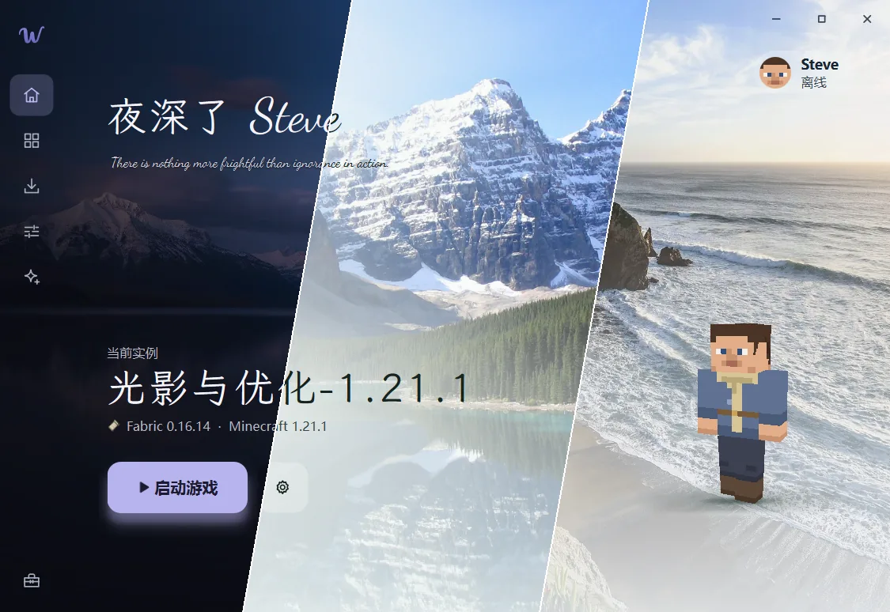
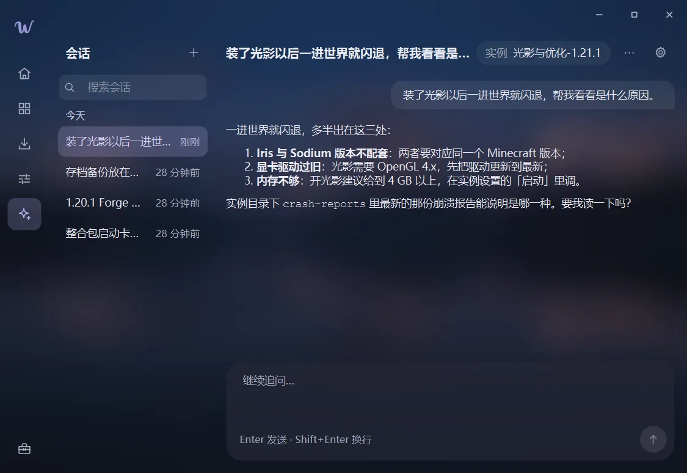
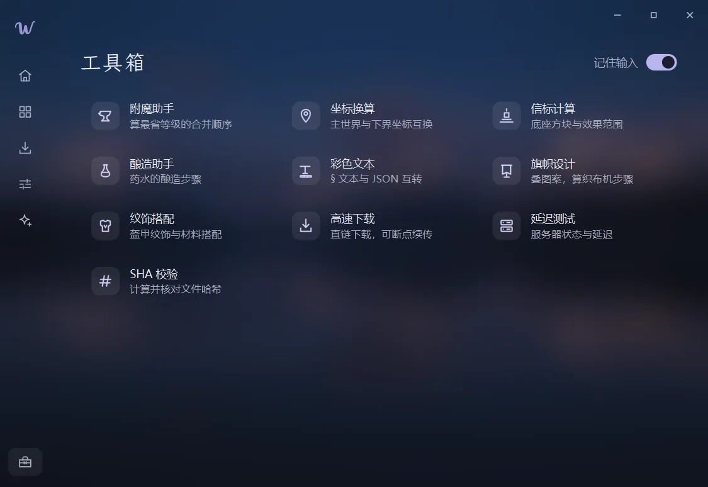

Appearance
Three scenic themes, Alpine Dusk, Glacier Lake and Sunset Cliffs, over a frosted interface that follows the system light or dark mode.
- CustomizationBackground image, accent color and text opacity are adjustable.
- Home GreetingThe greeting follows the time of day, with a quote of the day below.
- Instant SavingSettings are saved as they change, with no Apply button.

Installation and Downloads
Installs Vanilla, Fabric, Quilt, Forge and NeoForge clients, as well as Paper, Purpur and Spigot servers.
- DownloadsConcurrent and resumable, with speed limit and proxy support.
- File ReuseExisting files are verified first and reused when intact.
- Integrity ChecksMod files whose integrity cannot be verified are not written.

Modpacks
Imports ZIP, mrpack and CurseForge packs as well as MultiMC / Prism instances.
- More FormatsRAR and 7z packs can be imported once 7-Zip is installed.
- Import ChecksThe game version and loader are identified before import; possible conflicts are reported.
- Safe ExportExported modpacks contain no account information.
Instances and Upgrades
Instances can be grouped and favorited; mods, resource packs, shaders, data packs, worlds and server lists are managed in one place.
- Safe UpgradesEvery in-place upgrade is preceded by a verified full snapshot, so it can be rolled back.
- BackupsWorld backups and full instance snapshots.
- Deletion SafeguardDeleted instances go to the Recycle Bin, after a second confirmation.

Agent
Connects an OpenAI-compatible model to analyze logs and crash reports.
- Instance ScopeEach conversation is bound to the selected instance and can view its folders and configuration.
- Per-Action ApprovalWrites, deletions and similar actions each require the user’s approval.
- Backup FirstFiles are backed up before they are modified and can be restored.

Toolbox
Common tools for enchanting, coordinates, beacons, brewing, banners, colored text, server ping and more.
- Enchanting HelperCalculates anvil experience costs and the optimal combining order.
- Coordinate ConverterParses F3+C coordinates and converts between the Nether and the Overworld.
- Banner DesignerPreviews patterns and lists the crafting steps, materials and commands.

All Features
- All-in-One InstallationVanilla, Fabric, Quilt, Forge and NeoForge, plus Paper, Purpur and Spigot servers.
- ModpacksImport ZIP, mrpack, CurseForge or MultiMC / Prism instances; RAR and 7z too with 7-Zip.
- InstancesGroup and favorite; mods, resource packs, shaders, data packs, worlds and servers in one place.
- Safe UpgradesMove to a new game version as a copy, or in place behind a verified full snapshot to roll back to.
- DownloadsConcurrent, resumable, speed limit and proxy; existing files verified and reused.
- JavaFinds installed Java or fetches one from Adoptium.
- ServersConsole, server.properties editor, whitelist / ops / bans, backups.
- ToolboxEnchanting order, coordinates, beacons, brewing, banners, colored text, server ping and more.
- AgentConnects an OpenAI-compatible model to analyze logs and crash reports; every change requires the user’s approval.
- AppearanceThree scenic themes over a frosted interface; the background image and accent color can be customized.
A single exe — download and run, nothing to install. Available for Windows x64.